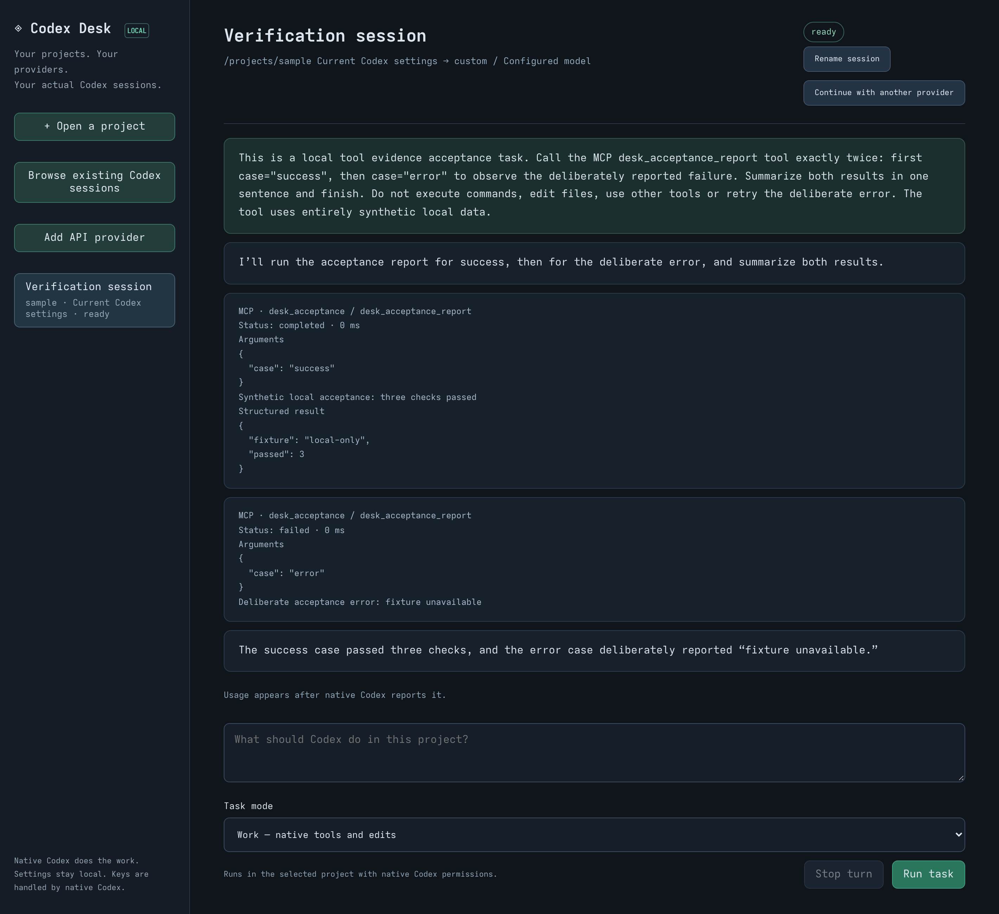

01 / Install & launch
Use your existing Codex CLI and sign-in. Follow the one-command uvx launcher or Python instructions; the wheel installs without Git. Desk opens a local browser workbench.
Codex Desk / Local workbench
Read the original decision. Keep your next step ready.
Find a remembered phrase in your Codex history, read its original context, then save the next task and return to the same conversation. Free, open source, and local—with your existing Codex sign-in and settings.
Free open source · Python 3.11+ & installed Codex CLI
Native integration exercised with CLI 0.171.0 on Linux

Try the interactive sample first: find the retry decision, read the original answer, save preparation and reload. The sample uses browser storage; the installed workbench uses your own Codex history.
Use your existing Codex CLI and sign-in. Follow the one-command uvx launcher or Python instructions; the wheel installs without Git. Desk opens a local browser workbench.
Your recent work appears on the first screen. Choose Resume conversation beside the project you want. Read its prior messages and tool results before sending a task. Remember a phrase instead of a title? Find the old answer and read its original context, even after its project folder is gone. Use Browse all conversations for older titles.
Try the verification prompt below. Approve the native command if asked, then inspect the exact output and pass/failure result. For new work, explicitly choose Start new conversation.
Close the browser and reopen the printed local URL while Desk’s terminal is running. Choose the same named session. Ctrl+C stops Desk and its running tasks; relaunch with the same environment and Codex home/state settings next time.
Find this project's verification command, run it, and report the exact pass/failure result. Do not edit files.
Missing a conversation? Project results use its exact saved working directory; try the subfolder where it started, or Browse existing Codex sessions in the sidebar. Title search matches native extracted titles.
Choose Continue with another provider in an open session, or Review handoff from saved history. Review the visible messages, command/file/MCP evidence and next goal, then select your target profile. This starts a distinct native thread; the original conversation stays intact. A same-thread resume instead uses your current selected settings.
Stuck at any step? Get help with one project task. Bring your operating system, CLI version, task and step reached; a short, redacted error excerpt is enough.
Find & resume a saved conversation90-second illustrated task walkthrough中文项目上手Optional terminal-only provider setup & receipts
A local daily workbench for your installed Codex. Run your own project task, return to the same conversation, or use a reviewed tool-evidence handoff to continue with another provider.
Free open source · Native app-server · Local project history
Test the real n8n engine, or inspect saved parent/child item links locally. The one-minute first case includes passing and regressed native reports. Local JSON slices: download an editor test, import into your existing n8n, and run it—no n8n-check CLI or Docker. v1, single-run; no Merge, loops, waits or mocks.
Open two original HiGHS logs in your browser. Inspect the reported status, gap, phase times and primal/dual progress; jump to the exact source lines. Save a private comparison to reopen for the next change, and make an editable engineering brief. Your logs stay on your device.
Our Ivanti pagination and SQLGlot SQL fixes were merged upstream. Explore native CPU, optimization and agent-output studies with reproducible checks.